Ce qui a été corrigé et ce qui reste à confirmer
Unités des huit filtres techniques, galerie des deux Concorde, pictogrammes, navigation et besoins d’accessibilité harmonisés. Filtres techniques mobiles regroupés, état déplié visible sur S06. Photos et affiches originales, crédits individuels connus conservés.
Interface/licence web et logo vectoriel officiels restent à obtenir. Autres crédits individuels et droits de production à confirmer. Géométrie, trajets, durées et disponibilités des planches sont illustratifs. Aucun CMS, service connecté ou audit RGAA n’est démontré par ces images.
Accueil
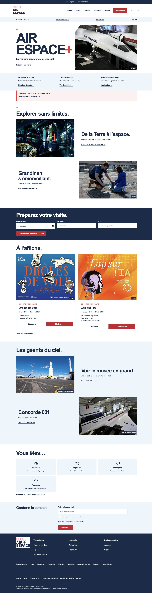
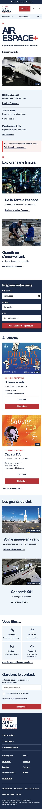
Vous êtes
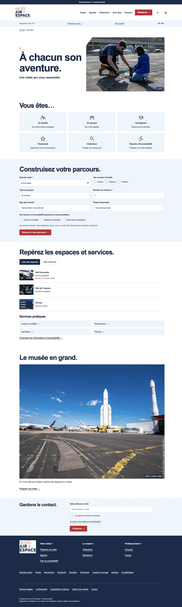
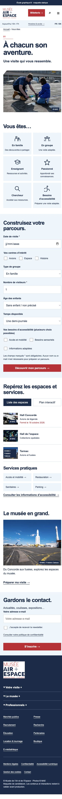
Agenda
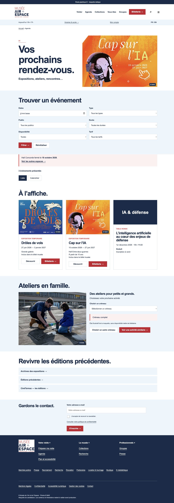
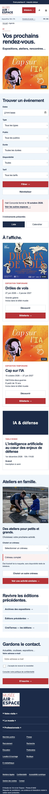
Collections
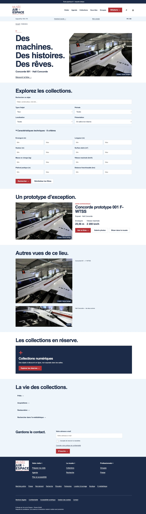
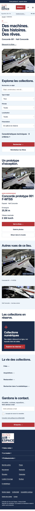
Groupes
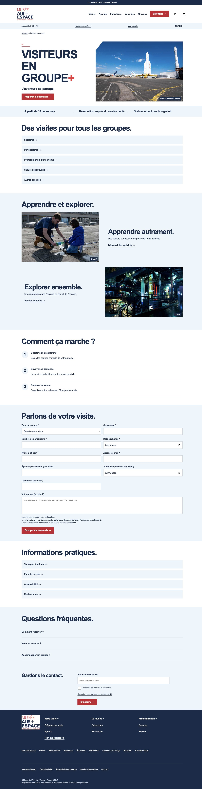
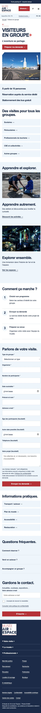
S01 · Pratique & urgence
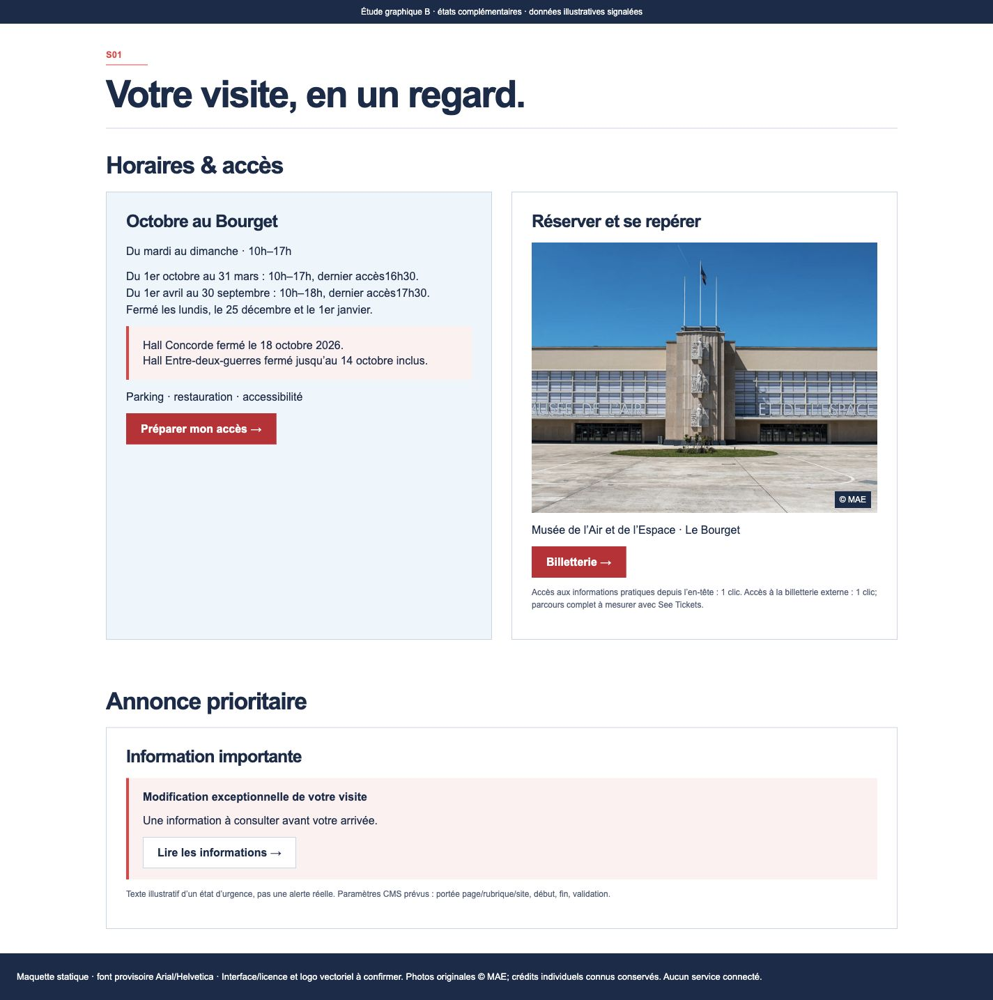
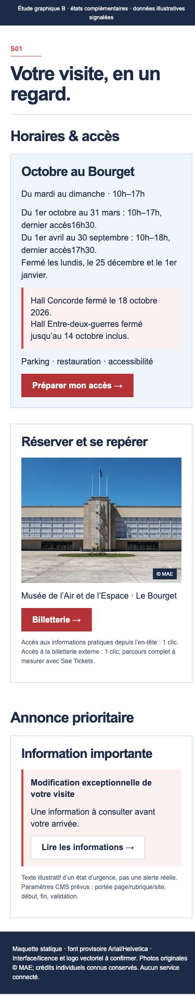
S02 · Résultat parcours
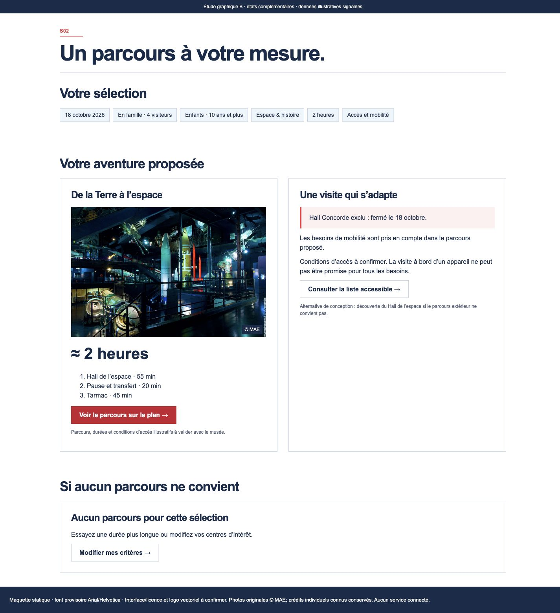
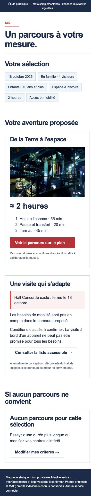
S03 · Plan & liste
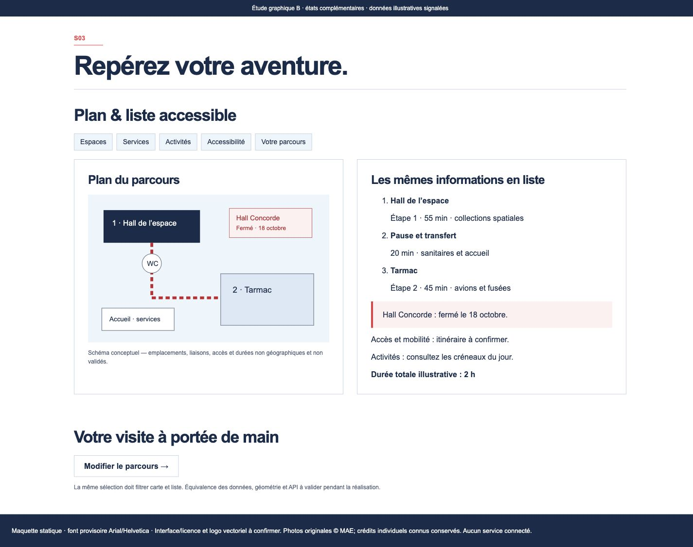
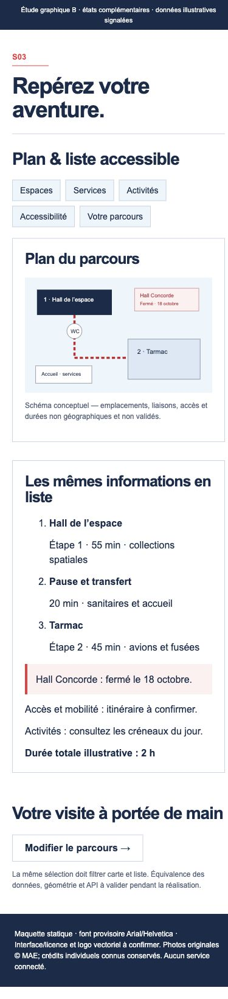
S04 · Calendrier & disponibilités
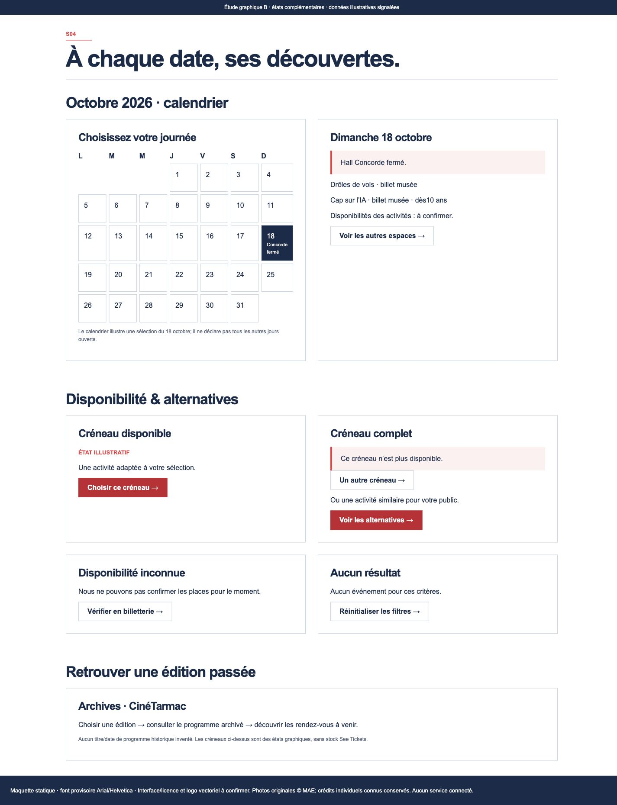
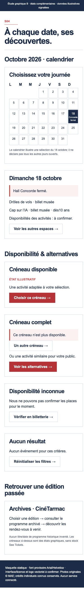
S05 · Recherche & langues
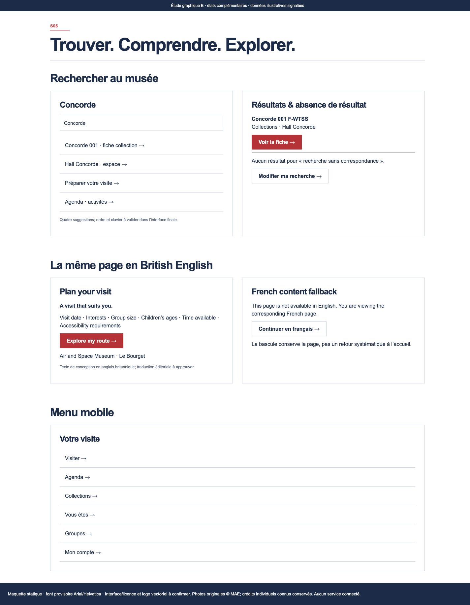
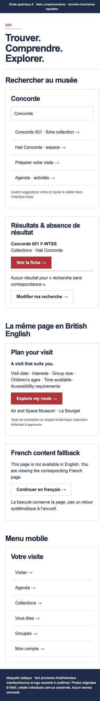
S06 · Fiche & formulaire
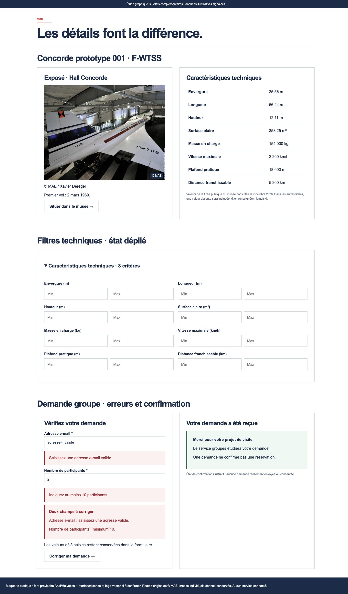
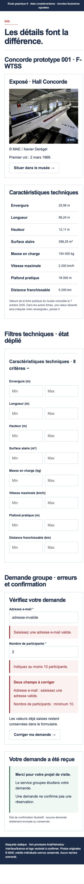